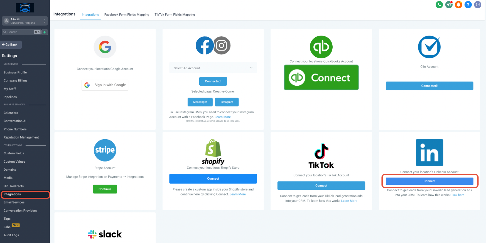
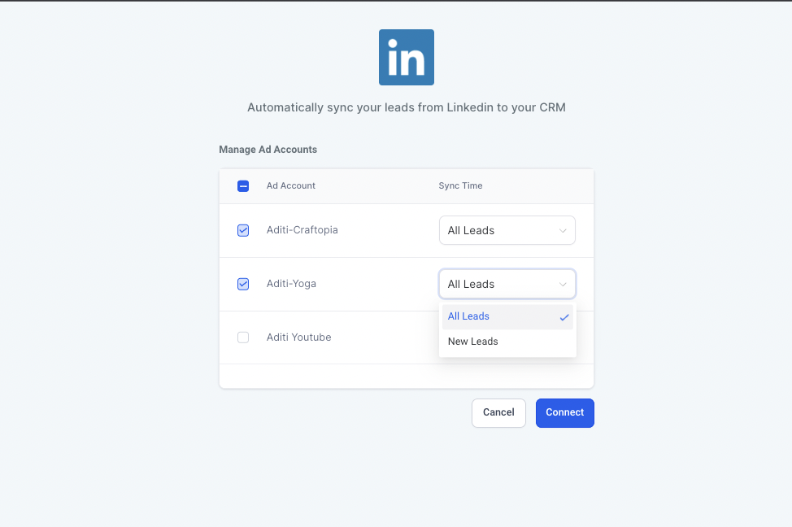
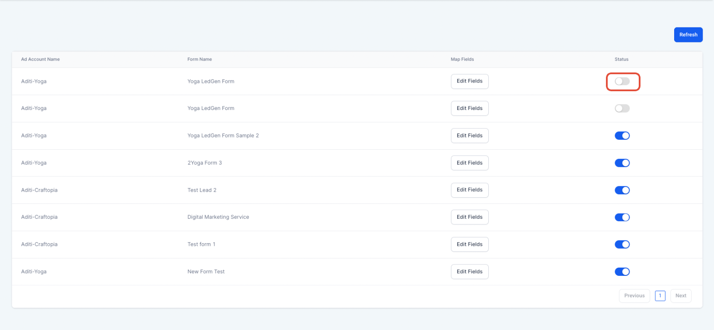
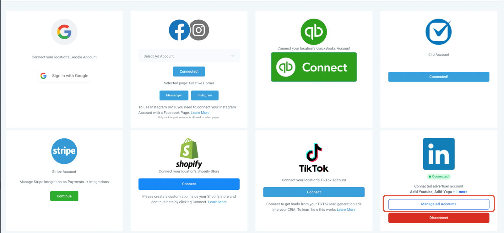
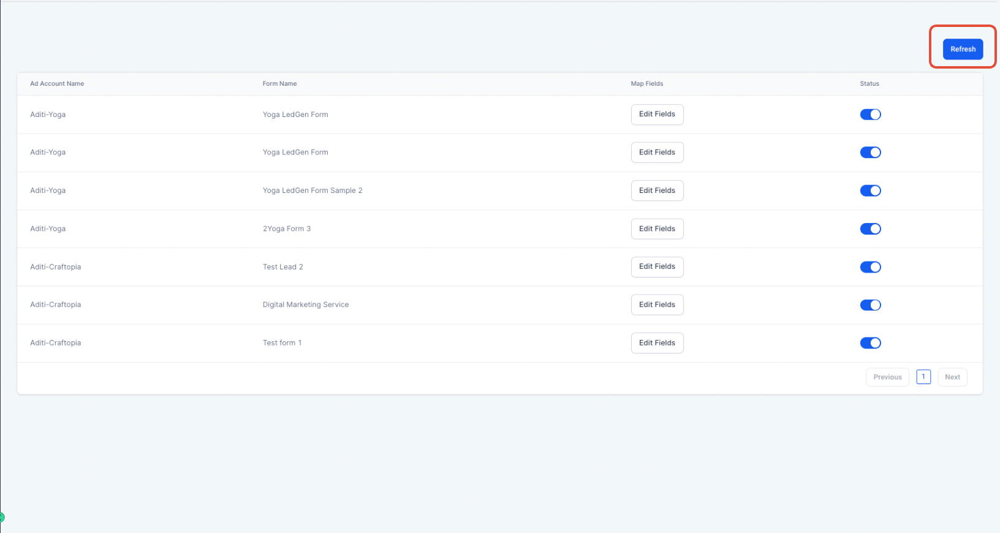
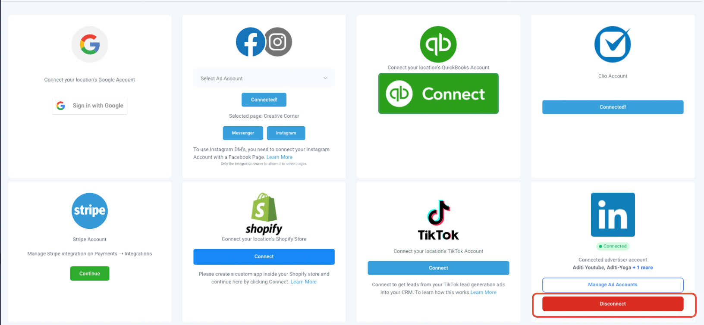
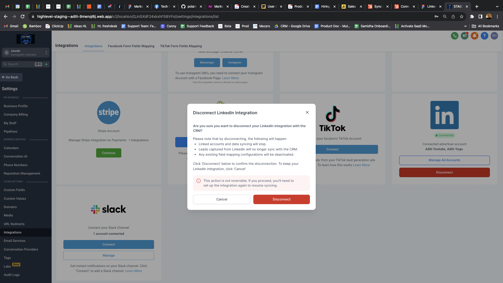

Seamlessly fetch all your leads from LinkedIn directly into your CRM with our easy integration.
TABLE OF CONTENTS
How it works?
Initiate LinkedIn Integration:
- Navigate to the sub-account labs to enable LinkedIn integration.
- Go to the integrations page located under the settings tab.
- Find the LinkedIn integration.
- Click on Connect to initiate the process.

Authorize Account & Permissions:
- Log in to your LinkedIn account.
- Ensure you grant all necessary permissions for the integration to be successful.
Select Ad Accounts:
- Choose an ad account or multiple ad accounts to connect to your sub-account.
- Note: There's no limit to the number of ad accounts you can connect to your sub-account.

Ad Account Requirements:
- Ensure the ad account you're integrating has a linked LinkedIn page. Without this, the integration won't be successful.
Configure Synchronization:
- For each ad account you're integrating, determine its sync time.
- Options include:
- All leads: Sync all leads from the past 90 days and all new leads.
- New leads: Only sync new leads.
- Click on Connect to proceed.
Form Field Mapping:
- Click on Configure form field mapping or go to the LinkedIn form field mapping tab at the top.
- Use the Map Fields button to align your LinkedIn form fields with CRM fields.
- Click Confirm to save and complete the integration.
- If you want to disable inbound leads from any of the forms, toggle the status off.

Frequently Asked Questions (FAQs):
How do I add/update ad accounts in the future?
Navigate to Manage Ad Accounts under Integrations > LinkedIn. From here, you can add/remove or modify the sync time for existing ad accounts. Click Update to save changes.

I can't see all forms under the LinkedIn field form mapping. What should I do?
For efficiency, only mapped forms are displayed upon revisiting the 'LinkedIn form field mapping' page. To view all, including unmapped forms, click Refresh on the page's top right.

Can I alter the sync time for an ad account after integration?
Absolutely! Visit Manage Ad Accounts to adjust the sync time for any connected ad account. Changing from 'New leads' to 'All leads' will fetch the last 90 days of leads into the CRM for that account, provided the form fields are correctly mapped.
How can I disconnect the integration?
Go to the integrations page, select Disconnect, and then confirm by clicking Disconnect in the pop-up.


Is it possible to link the same ad account across multiple sub-accounts?
Yes, an ad account can be connected to multiple sub-accounts. All leads from that ad account will populate in every linked sub-account.